Table des matières
- Vous êtes encore de garde …
- Compas électroniques
- Commencement rapide
- Charger une image
- Ajustement de l'image
- Exemple ECG
- Quitter le mode d'image
- Types de compas
- Déplacement des compas
- Prendre des mesures
- Addition et suppression de compas
- Sélection d'un compas
- Plus d'options
- Étalonnage
- Changement de l'étalonnage
- Intervalle/fréquence
- Calcul de la fréquence moyenne et de l'intervalle moyen
- Calcul du QT corrigé
- « Brugadometer »
- Préférences
- Problèmes et limitations
- Remerciements
Vous êtes encore de garde …
Il est 2h00 du matin et le téléphone sonne. C'est une infirmière des soins intensifs du département de cardiologie. Il faut que M. Smith reçoive son médicament antiarythmique (qui crée ces calendriers de médicaments farfelus?) et son ECG a un intervalle QTc qui est un peu prolongé, selon l'ordinateur. L'infirmière craint que l'administration soit dangereuse. Elle veut vous transmettre l'ECG.
Vous téléchargez l'ECG sur votre téléphone portable. Vous étudiez l'intervalle QT. Vous n'êtes pas certain que la mesure prise par l'ordinateur soit correcte. Vous devez le mesurer vous-même. Vous commencez à compter les petites boîtes. Vous faites sortir de votre poche les vieux compas mécaniques qu'un délégué médical vous avait donnés il y a quelques années, à l'époque où une telle générosité était encore légale. Vous pensez: je vis dans une époque numérique. Suis-je réellement en train de prendre des mesures avec mon iPhone pour un compas mécanique?
Compas électroniques
L'application Compas EP offre des compas électroniques pour mesurer les intervalles sur les images des enregistrements électrocardiographiques ou électrophysiologiques. Dans le laboratoire d'électrophysiologie les compas électroniques font partie du système d'enregistrement informatisé. L'application Compas EP fournit les mêmes compas électroniques pour votre iPhone ou iPad. Les compas électroniques de Compas EP sont plus précis, plus faciles à utiliser, et moins dangereux que les compas mécaniques (ils n'ont pas de points tranchants!).
Commencement rapide
Quand le Compas EP commence, un échantillon d'ECG et un compas de temps sont chargés. Déplacer le compas en touchant la barre transversale et en la glissant avec votre doigt. Élargir et contracter le compas en touchant la barre verticale et en le glissant. Pincer et zoomer l'image de l'ECG pour l'agrandir ou le rétrécir selon votre besoin. Si l'ECG est plus grand que votre écran, vous pouvez le glisser avec votre doigt afin de trouver un endroit pour mesurer. Le reste des instructions explique comment charger les images de l'ECG, ajouter et supprimer les compas, les étalonner, et rendre les calculs avancés comme l'intervalle QT corrigé.
Charger une image
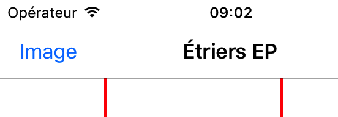
Figure 1 : Bouton d'Image
Appuyer le bouton d'Image en haut à gauche de l'écran pour montrer le menu d'Image en bas de l'écran.
Figure 2 : Menu d'Image
Avec ce menu vous pouvez charger et ajuster une image électrocardiographique. Il y a plusieurs manières de charger une image d'un ECG.
Prendre une photo d'un ECG
Toucher le bouton de la Camera pour prendre une photo d'un ECG et pour la charger dans l'application. Noter que les images qui sont ainsi saisies ne sont pas enregistrées dans la collection de photos de votre appareil. Il est mieux que vous utilisiez cette option pour prendre une mesure rapide quand vous n'avez pas besoin d'enregistrer l'image.
Choisir une photo de votre collection de photos
Taper Choisir pour choisir une image qui a été déja enregistrée dans la collection de photos de votre appareil, par exemple, un fichier joint ou une photo déja prise.
Choisir une photo ou un PDF avec l'icône de partage d'autres applications
Compas EP peut ouvrir des fichiers d'images et des PDF, quel que soit l'endroit où ils se trouvent dans votre appareil. Il est facile d'ouvrir directement les fichiers joints and les fichiers iCloud, Google Drive, et Dropbox. Il est aussi facile d'ouvrir des images électrocardiographiques de l'application AliveCor Kardia™. La solution pour ouvrir les images dans des applications externes est l'utilisation du bouton Partage. Cela ressemble à ceci: 
Selon l'application, ce bouton se trouve en haut ou en bas de l'écran, ou il faut appuyer pendant plusieurs secondes sur une image pour ouvrir le menu Partage. Voici le bouton Partage en bas à gauche de l'écran de l'application Kardia:
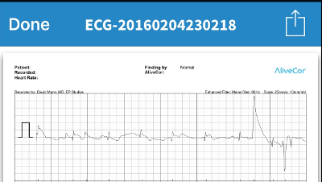
Figure 3 : Bouton Partage en bas à gauche
Quand le menu Partage est ouvert, l'une des options est Importer avec Compas EP. Le choix de cette option ouvrira l'image dans l'application.
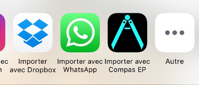
Figure 4 : Importer avec Compas EP ouvrir l'image dans Compas EP
Si vous ne voyez pas l'option Importer avec Compas EP, essayer le bouton Coup d'œil:
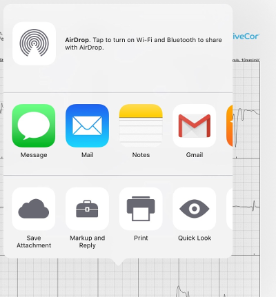
Figure 5 : Le bouton Coup d'œil est en bas à gauche
ou le bouton Ouvrir dans…. Cette sélection ouvrira une fenêtre où Importer avec Compas EP apparaîtra.
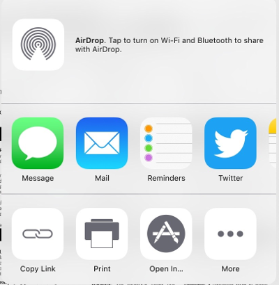
Figure 6 : Le bouton Ouvrir dans… permet à l'image de s'ouvrir dans Compas EP
Ouverture des fichiers joints ou des fichiers de Dropbox
Pour les fichiers joints ou les fichiers Dropbox, télécharger le fichier (les détails dépendent du type de mail). En voyant le fichier, appuyer pendant quelques secondes pour faire apparaître le bouton Partage. Choisir Partage et puis choisir Importer avec Compas EP pour ouvrir l'image ou le PDF dans l'application.
AliveCor Kardia
Pour regarder des ECGs dans l'application AliveCor Kardia, choisir Journal, puis Partage pour l'ECG que vous voulez regarder.
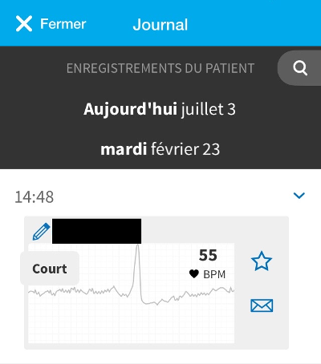
Figure 7 : Le bouton Partage de Kardia a une icône d'enveloppe
Après la sélection du bouton Partage, choisir PDF de la liste d'options qui apparaît. Ensuite choisir le bouton Partage en haut à droite de l'écran. Choisir Importer avec Compas EP et vous êtes prêt(e) à mesurer!
PDFs à pages multiples
Quand les fichiers PDF ont plus d'une page, l'application affichera la première page au début. Vous pouvez naviguer sur les autres pages avec la sélection des boutons fléchés du menu Image. Observer que si vous passez à une autre application et Compas EP est terminée par iOS (un événement qui se déroule automatiquement pour préserver l'espace mémoire), seulement la dernière page sera disponible quand l'application est relancée. Pour changer la page, il faut recharger le PDF.
Ajustement de l'image
Vous pouvez réajuster la position d'une image en utilisant le bouton multitouche. Pincer pour la zoomer et glisser pour la faire défiler. Pendant le mode d'image, les compas sont fixés en place. Utiliser le menu Ajuster pour tourner ou retourner l'image. Ceci est utile si l'image n'est pas correctement alignée avec l'écran. Vous pouvez la tourner de 90° dans toutes les directions, ou de 1°. En choisissant le menu Plus vous pouvez tourner l'image de moins de degrés, aussi peu que 0,1°. Vous pouvez faire une image miroir s'il est nécessaire. Choisir OK pour retourner du menu Plus au menu Ajuster. En utilisant ces options, vous pouvez refaire les images. Vous devez étalonner les compas après la rotation de l'image. Si vous voulez retourner à la position originale et le zoom initial, utiliser Réinit. Après l'ajustement de l'image choisir OK pour retourner au menu principal d'image.
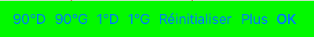
Figure 8 : Menu Ajuster
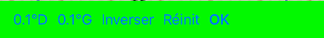
Figure 9 : Menu Plus
Exemple ECG
Taper Exemple pour montrer l'exemple ECG qui apparaît quand Compas EP commence. Il est utile de pratiquer l'utilisation de l'application, ou pour la démontrer aux autres.
Quitter le mode d'image
Après avoir chargé et réajusté l'image, vous devez quitter le mode Image pour utiliser les compas. Choisir le bouton Mesurer en haut à gauche pour retourner à l'écran principal de Compas EP.

Figure 10 : Taper le bouton Mesurer pour quitter le mode d'Image
Types de compas
Les compas peuvent être horizontaux pour les mesures de temps, verticaux pour les mesures d'amplitude, ou angulaires pour les mesures d'angles en degrés. Les compas de temps ressemblent à la lettre H, les compas d'amplitude à la lettre H couchée sur le côté, et les compas d'angle au début à la lettre V inversée.
Déplacement des compas
Les compas de temps et d'amplitude
Glisser la barre transversale d'un compas pour le déplacer comme une unité. Glisser les barres à gauche ou à droite (ou en haut ou en bas pour les compas d'amplitude) pour les étendre ou réduire. Noter que vous ne pouvez pas pincer les deux barres au même temps.
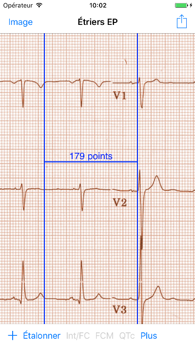
Figure 11 : Seul compas de temps désélectionné et non étalonné
Les compas d'angle
Les compas d'angle sont déplacés comme une unité en glissant l'angle au sommet ou juste au-dessus du sommet. Le sommet est l'endroit où les deux lignes se joignent. Si vous glissez une barre d'un compas d'angle une petite distance du sommet, l'angle s'ouvrira ou se fermera.
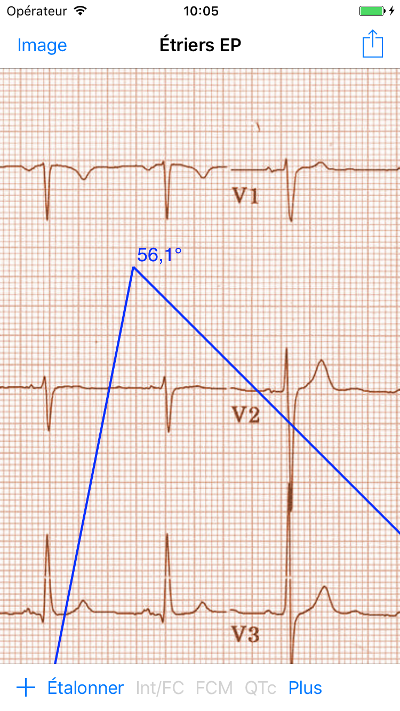
Figure 12 : Compas d'angle
Petits déplacements
Il est aussi possible de déplacer les compas à un petit intervalle en utilisant les boutons fléchés. Voici petits mouvements.
Prendre des mesures
L'intervalle mesuré par les compas de temps ou d'amplitude est affiché près de la barre transversale de le compas. Avant l'étalonnage des compas, les mesures sont affichées en unités arbitraires (les pointes sont à peu près égales aux pixels). Les compas d'angle montrent une mesure de l'angle actuel et il ne faut pas les étalonner.
Addition et suppression de compas
Choisir + sur le menu principal pour ajouter de nouveaux compas.
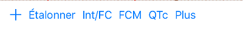
Figure 13 : Menu principal
Choisir Temps, Amplitude, ou Angle pour ajouter le type de compas que vous voulez.
Taper deux fois sur un compas pour le supprimer.
Figure 14 : Menu d'ajouter un compas
Sélection d'un compas
Quand il y a plus d'un compas sur l'écran, il faut qu'un compas soit choisi comme le compas actif pour l'étalonner ou pour faire les calculs. Par défaut un compas non choisi est bleu et un compas choisi est rouge. Vous pouvez changer les couleurs en utilisant les préférences. Il est aussi possible de changer les couleurs de compas individuels. Une simple touche sur un compas non choisi le choisira. Une deuxième touche encore (mais pas trop vite, parce que une double touche supprimera le compas) le désélectionnera. Comme il peut y avoir un seul compas choisi à la fois, la sélection d'un compas va désélectionner un autre compas qui est sélectionné. Parfois un compas sera choisi automatiquement, par exemple pour faire de l'étalonnage, si aucun compas n'est déjà choisi. Si vous voulez choisir un autre compas, il faut simplement le taper.
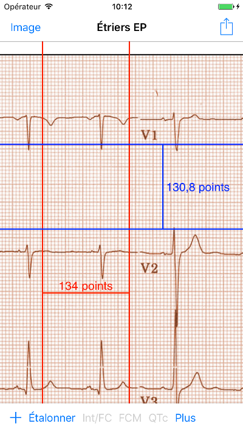
Figure 15 : Deux compas non calibrés, un de temps et un d'amplitude. Le compas de temps est sélectionné.
Plus d'options
Plus de menus

Figure 16 : Le menu compas Plus
La sélection du bouton Plus du menu principal ouvre le menu au-dessus. Les options de ce menu sont décrites ensuite.
Changer les couleurs de compas
Au début les couleurs des compas sont fixés par les préférences et ces couleurs sont appliquées à tous les nouveaux compas ajoutés. Cependant, après qu'un compas est ajouté, sa couleur peut être changée. Les changements de couleur persistent jusqu'à ce que les compas soient supprimés ou l'application soit arrêtée. Sur le menu Plus, choisir le bouton Couleur. Puis appuyer pendant quelques secondes sur un compas pour montrer le sélecteur de couleur. Choisir une couleur et le compas prendra cette couleur-là.
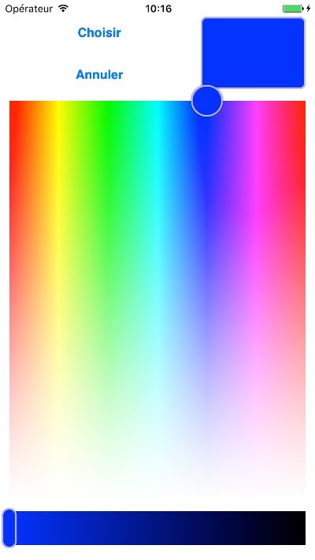
Figure 17 : Sélecteur de couleur
Petits mouvements
Parfois vous aimeriez raffiner la position d'un compas, ou vous trouvez qu'il est trop difficile de le positionner exactement en glissant ses composants avec votre doigt. Vous pouvez faire ces petits mouvements avec le bouton Régler. D'abord, appuyer sur le bouton et puis appuyer pendant quelques secondes sur un des composants de le compas choisi (barre transversale, barre latérale ou, en cas d'un compas d'angle, peut-être le sommet) et un menu avec des boutons du mouvement apparaîtra. Des boutons avec des flèches à gauche, à droite, montantes ou descendantes déplaceront le composant choisi ou tout le compas en utilisant des petits mouvements. Vous pouvez les déplacer par un seul point ou par un dixième d'un point, selon quel type de flèche vous appuyez (⇨ or →). Appuyer le bouton OK pour retourner au menu principal.
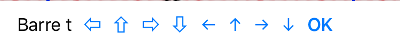
Figure 18 : Les boutons pour ajuster la position des compas
Noter les abréviations des composants: Barre t = Barre transversale, Barre g = Barre gauche, Barre d = Barre droite, Barre sup = Barre supérieure, Barre inf = Barre inférieure.
Fixer l'image
Pendant le mouvement et l'ajustement des compas, vous pouvez parfois déplacer l'image ECG involontairement. Choisir Immobiliser pour immobiliser l'image sur l'écran. Un message apparaîtra en haut de l'écran pour indiquer que l'image est immobilisée. Démobiliser l'image en choisissant Débloquer.
Étalonnage
Choisir Étalonner. Étirer le compas sélectionné sur un intervalle connu (par exemple 1 000 msec de temps, ou 10 mm d'amplitude). Choisir Définir. Dans la boîte de dialogue, entrer l'intervalle et les unités (par exemple 500 msec, ou 1 sec, ou 1 mV). Choisir Définir dans la boîte du dialogue pour définir l'étalonnage. Noter qu'il faut que les compas de temps et d'amplitude soient étalonnés individuellement. Après l'étalonnage, les compas montreront les intervalles avec les unités utilisées pour les étalonner. Des nouveaux compas créés utiliseront le même étalonnage.
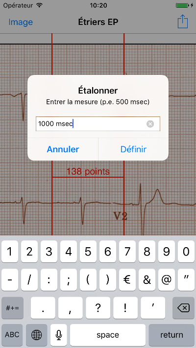
Figure 19 : Compas de temps qui sera étalonné
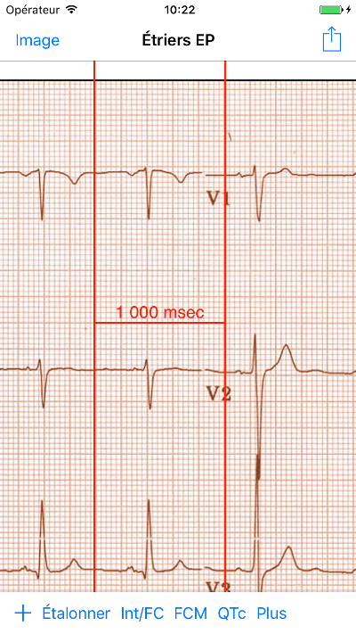
Figure 20 : Compas de temps après l'étalonnage
Il ne faut pas étalonner les compas d'angle. Cependant, après l'étalonnage de compas de temps et d'amplitude, les compas d'angle peuvent être utilisés comme un Brugadometer.
Changement de l'étalonnage
Vous pouvez réétalonner à tout moment. L'étalonnage peut être complètement effacé en choisissant Effacer sur le menu d'étalonnage. Noter que l'étalonnage continue quand l'appareil est tourné ou l'image est zoomée. La sélection d'une nouvelle image réinitialisera l'étalonnage.
Intervalle/fréquence
Après qu'un compas de temps est étalonné, si vous utilisez des unités du temps (par exemple msec ou sec) pour l'étalonnage, il est possible d'alterner entre les mesures d'intervalle (par exemple 600 msec) et les mesures de fréquence cardiaque (par exemple 100 bpm) en choisissant Intervalle/FC ou Int/FC.
Calcul de la fréquence moyenne et de l'intervalle moyen
Sélectionner un compas étalonné et mesurer un nombre d'intervalles. Choisir Fréquence moyenne or FCM et entrer le nombre d'intervalles mesurés. Une boîte de dialogue montrera la fréquence cardiaque moyenne calculée et l'intervalle moyen. Cela est utile pour le calcul des fréquences et des intervalles pendant un rythme irrégulier, par exemple la fibrillation auriculaire.
Calcul du QT corrigé
Choisir QTc. Étendre le compas sélectionné sur un ou plusieurs intervalles RR et puis choisir Mesurer. Entrer le nombre d'intervalles étant mesurés et puis choisir Continuer. Utiliser le même compas pour mesurer l'intervalle QT. Choisir Mesurer. Une boîte de dialogue montrera le QT calculé en utilisant la formule de Bazett.
Petits mouvements pendant la mesure QT
Noter qu'avec toutes les autres mesures, il est possible de faire des petits mouvements des compas en utilisant les boutons fléchés dans le menu Régler avant de les mesurer. Cependant, pendant la deuxième étape de la mesure de QT corrigé (la mesure QT), le menu Régler n'est pas disponible à cause de la présence du menu de la mesure QT. Ainsi, pour faire des petits mouvements pendant la mesure du QT, il faut appuyer sur les composants d'un compas pendant quelques secondes et puis le compas peut être utilisé pour montrer les flèches de mouvement. Cela permet des petits mouvements pendant la mesure du QT, avant le dernier calcul du QT corrigé. Cette préférence est facultative. Il y a ceux qui hésitent pendant le mouvement d'un compas, mais ces hésitations peuvent ouvrir le menu Régler. Cela peut entraîner des problèmes. Pour cette raison les appuis qui durent longtemps ne sont pas disponibles dans toute l'application. Néanmoins, dans ce cas il est quand même possible d'effectuer cette fonction. Activer cette préférence en choisissant Permettre de régler QTc.
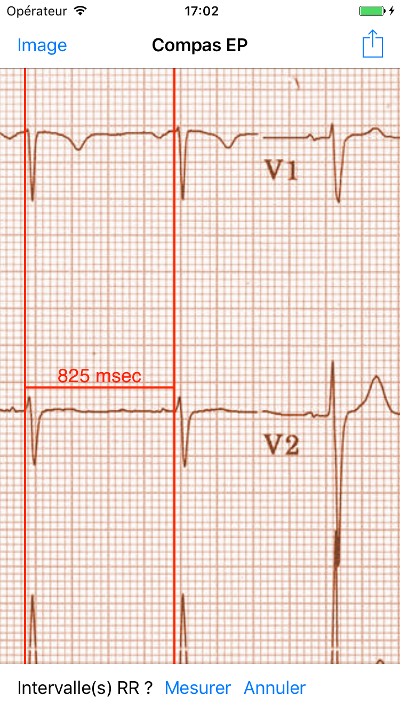
Figure 21 : La mesure du QTc première étape: mesurer un ou plusieurs intervalles RR
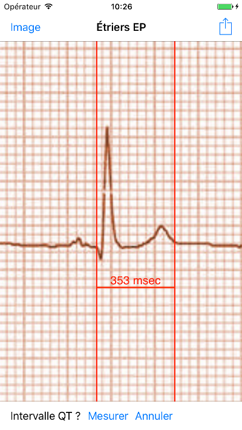
Figure 22 : La mesure du QTc deuxième étape: mesurer l'intervalle QT
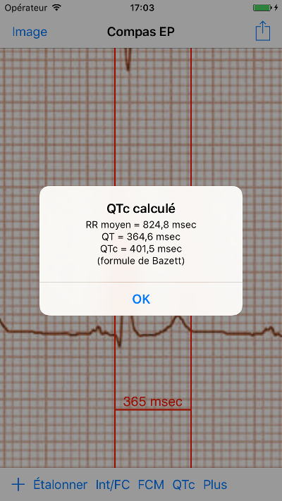
Figure 23 : Résultat du QTc
« Brugadometer »
Le Brugadometer est un outil de diagnostic, utilisé pour l'analyse du syndrome de Brugada. Cet outil a été développé en collaboration avec Dr. Adrian Baranchuk et ses collègues à l'Université Queens, Kingston, en Ontario. Le Brugadometer peut distinguer entre un bloc de branche droite incomplète, et un motif du syndrome de Brugada aux fils V1 ou V2. Cet outil est en cours de développement dans Compas EP et il évoluera dans des futures versions. Pour utiliser le Brugadometer, il faut étalonner un compas de temps en msec ou mm et un compas d'amplitude en mm. Ensuite, un compas d'angle apparaîtra avec un triangle au sommet comme ceci.
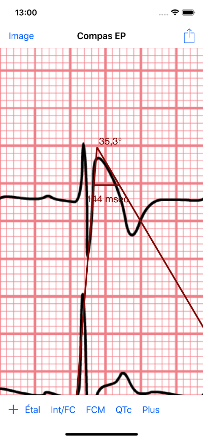
Figure 24 : Brugadometer avec une base de triangle 5 mm au-dessous du sommet de le compas
La base du triangle sera localisée à 5 mm au-dessous du sommet du triangle. L'alignement correct de ce triangle avec l'onde r' pour un individu soupçonné d'avoir le syndrome de Brugada donnera la mesure de l'angle beta et la mesure de la base du triangle 5 mm au-dessous du sommet. Une base de triangle qui est > 160 msec (4 mm à une vitesse standard de 25 mm par seconde) suggère la présence du syndrome de Brugada. Voici de Luna AB, Garcia-Niebla J, Baranchuk A. New electrocardiographic features in Brugada syndrome. Curr Cardiol Rev. 2014 Aug; 10(3): 175-180 pour plus d'informations.
Préférences
Vos préférences comme les couleurs des compas et les intervalles par défaut de l'étalonnage peuvent être choisies dans l'application de préférences de votre appareil sous la catégorie Compas EP. Vous pouvez les changer également en choisissant le menu Préférences du menu Action, que vous pouvez ouvrir en appuyant sur cette icône:  en haut à droite de l'écran. Après le changement des préférences, retourner à l'application par la sélection du bouton de retour en haut à gauche de l'écran des préférences.
en haut à droite de l'écran. Après le changement des préférences, retourner à l'application par la sélection du bouton de retour en haut à gauche de l'écran des préférences.
Problèmes et limitations
- Les images prises avec le bouton Camera ne sont pas sauvegardées dans vos photos. L'utilisation de l'appareil photo dans l'application est recommandée pour l'analyse rapide quand vous ne voulez pas enregistrer une image à long terme.
- La rotation de l'appareil ne préservera pas la relation entre l'image de l'ECG et les compas. Cependant l'étalonnage est conservé avec la rotation.
- Il est fortement recommandé de réétalonner les compas si l'image (pas l'appareil) est tournée. L'application ne l'exige pas quand même.
- Si l'application est mise en arrière-plan (par exemple quand vous changez d'une autre application) et puis est supprimée par le système d'exploitation (quelque chose que l'iOS fait pour préserver la mémoire), et si vous avez téléchargé un fichier PDF avec plusieurs pages, seulement la dernière page que vous avez vue sera disponible. Une boîte de dialogue apparaîtra dans ce cas. S'il faut changer la page dans cette situation, il faut que vous changiez le PDF encore.
Remerciements
- Je remercie Dr. Michael Katz pour l'idée.
- Je remercie Dr. Adrian Baranchuk et ses collaborateurs de l'Université Queen de Kingston en Ontario au Canada pour le concept du « Brugadometer » et pour leur aide en appliquant cet algorithme.
- Le code source de Compas EP est disponible sur GitHub.
- Compas EP est un logiciel libre et il est sous Apache License Version 2.0. Nous ne fournissons aucune garantie sur la précision de l'application. Utilisez-la à vos risques et périls.
- Pour des questions, des rapports d'erreurs, ou des suggestions, contactez mannd@epstudiossoftware.com.
- Le site Internet: https://www.epstudiossoftware.com.